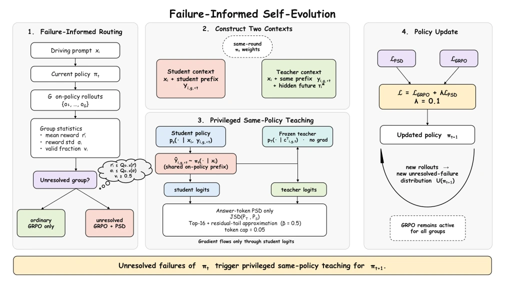
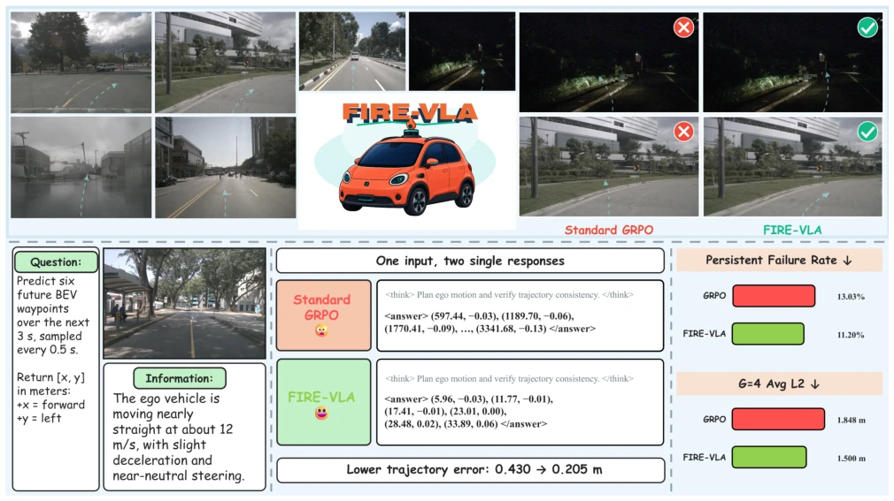

This paper proposes a "self-evolution" scheme for autonomous driving VLA models, which sounds very sci-fi; in essence, it uses a "self" with a future perspective to teach the "current self". GRPO cannot guide when everyone performs poorly; the author had a sudden idea, freezing the model as a teacher and secretly providing it with ground truth trajectories, allowing the student to learn against the teacher's "spoilers". This approach indeed has merit, as it avoids extra large models, saving compute. But do not celebrate too early; result data shows this method is mainly "putting out fires", recovering those rare severe accidents, while planning capability in normal road conditions is actually comparable to standard GRPO, even single-sample reward is slightly lower. The so-called "evolution" is more like overfitting to specific failure modes, after all only two rounds were run, and monotonic improvement has not been seen. Moreover, compute is actually not saved, as the teacher's forward pass must still be run once; the cost-effectiveness of this "self-evolution" remains questionable. Additionally, this routing mechanism based on fixed thresholds may lack generalization; once scene distribution changes, the definition of low-reward groups may fail, leading to supervision signal mismatch.
Autonomous driving VLA models rely on Reinforcement Learning (RL) to optimize policies, among which Group Relative Policy Optimization (GRPO) is popular due to its value model-free nature, as shown in AutoDrive-R2 [5]. However, GRPO's core assumption is the existence of reward differences within a group, guiding optimization through comparison. When a group of sampled trajectories all perform poorly (unresolved failure), GRPO can only rank failure degrees but cannot provide specific behavioral guidance on how to escape the failure region. Existing failure-aware methods such as ELF-VLA [7] rely on external feedback or privileged distillation, often requiring larger external teacher models or complex correction processes. FIRE-VLA attempts to solve this pain point: when lacking within-group comparison signals, how to utilize the model's own unresolved failures to generate supervision signals without introducing a larger external teacher. This is not only a technical patch but also a re-examination of RL's information utilization efficiency in low-diversity failure scenarios, aiming to fill the gap when relative reward signals fail.
FIRE-VLA is a four-stage framework. First, Failure-Informed Routing filters out low-reward and low-diversity "unresolved failure groups" based on within-group reward mean, standard deviation, and effective score. Specifically, when reward mean is below the 30th percentile and standard deviation is also below the 30th percentile, privileged distillation is triggered. Second, construct Teacher-Student context, both parameter scales are the same (Qwen2.5-VL-3B), but Teacher is frozen and can see hidden future trajectories (privileged info), Student is based only on the prefix generated by the current policy. Third, On-Policy Answer-Token Distillation, Teacher distills on the token distribution generated by Student, using Jensen-Shannon Divergence (JSD) and truncation, gradients flow only to Student, ensuring supervision focuses on answer tokens. Finally, Policy Update, combines privileged distillation loss (PSD) and GRPO loss with weights, weight set to 0.1. Key innovation lies in Round-Wise Self-Evolution, the updated policy becomes the Teacher for the next round, making failure distribution change dynamically with policy, without external teacher intervention. The whole process retains GRPO's activity for all groups, only adds PSD supervision for specific failure groups, achieving closed-loop self-iteration.

Figure 2: Failure-informed self-evolution in FIRE-VLA. (1) The current policy generates grouped on-policy rollouts, whose reward mean, reward standard deviation, and valid fraction route unresolved failure groups to additional PSD; GRPO remains active for every group. (2) Student and teacher start each round from the same policy and share the student’s on-policy prefix, but only the teacher receives the hidden future trajectory. (3) The frozen teacher supervises the student’s answer-token distribution through compact, capped JSD, with gradients flowing only through the student. (4) The routed PSD loss is combined with the universal GRPO loss to update the policy. The resulting policy induces a new rollout distribution and, consequently, a new distribution of unresolved failures for the nex
Experiments are based on 6,019 samples from nuScenes, extracted from 150 scenes, with no scene overlap. Baseline is standard GRPO, both initialized from Qwen2.5-VL-3B SFT, using the same 1,200 prompts. Evaluation includes single-sample low-temperature planning and G=4 random evaluation. Results show single-sample planning performance is comparable, Avg. L2 difference is not significant, confidence interval crosses zero. But under G=4 random evaluation, FIRE-VLA reduces average L2 from 1.848m to 1.500m, evaluation persistent failure rate from 13.03% to 11.20%. Distribution analysis indicates improvement mainly comes from reducing rare severe rollout errors, not uniform improvement of normal trajectories. Additionally, FIRE-VLA is slightly lower than GRPO on reward metrics, indicating its optimization direction leans more towards geometric error rather than scalar reward. Experiments did not perform multi-seed validation, and compute is not fully equal, because FIRE-VLA requires additional teacher forward propagation.

Figure 1: FIRE-VLA at a glance. Top: representative nuScenes scenes and paired trajectory contrasts between standard GRPO and FIRE-VLA. Bottom: a front-view image and historical ego motion condition six future BEV waypoints. The paired stochastic response shows an implausibly scaled GRPO trajectory and a plausible FIRE-VLA trajectory; the separate callout gives a normal-scale single-sample comparison. Across all 6,019 fixed samples, FIRE-VLA reduces evaluation-persistent failures from 13.03% to 11.20% and G=4 Avg. L2 from 1.848 to 1.500 m. The cases are illustrative; Sec. 4 and Appendix D specify the fixed selection protocol and paired analysis.